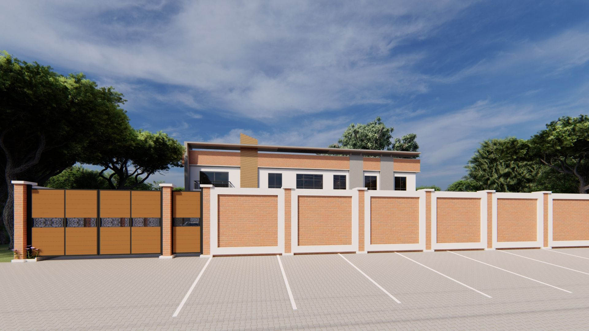
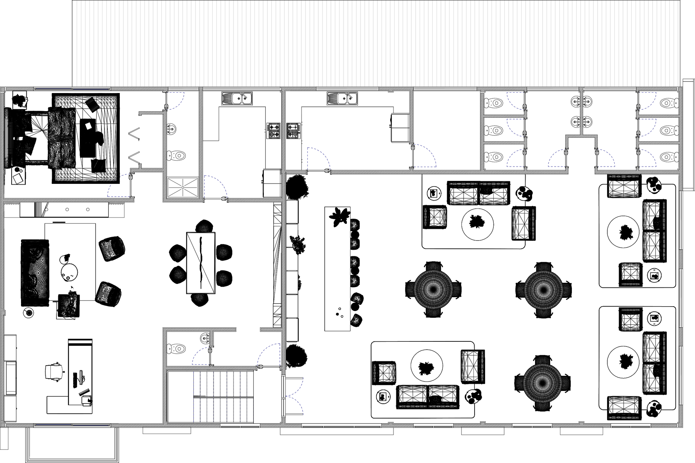
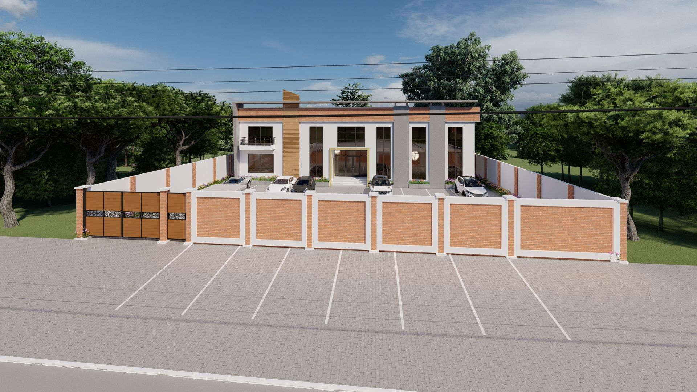
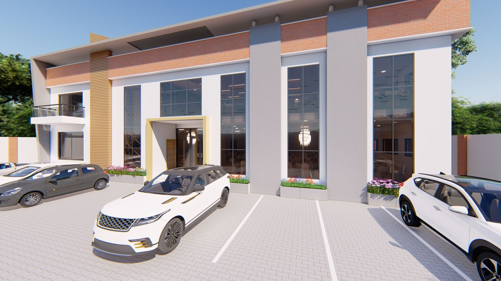
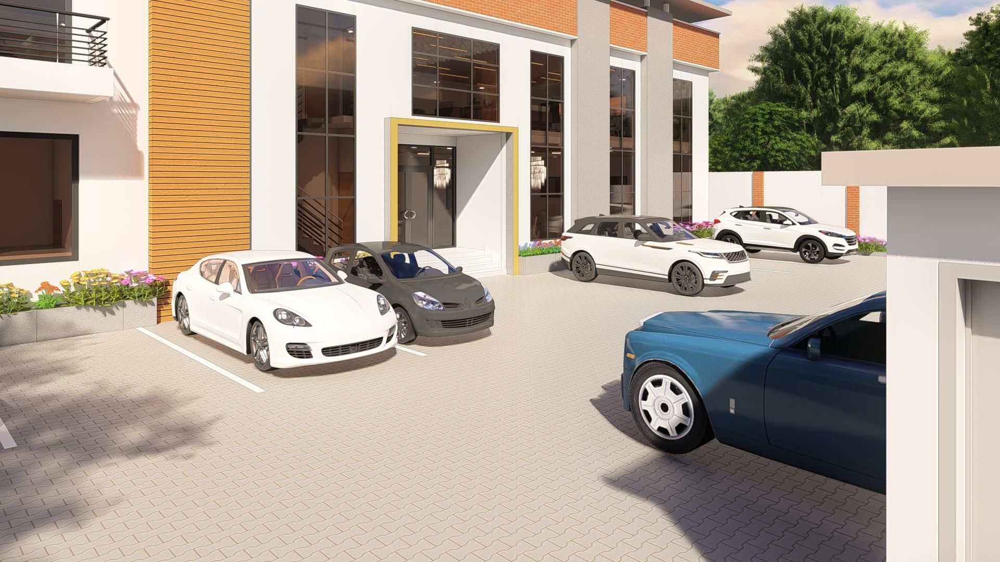
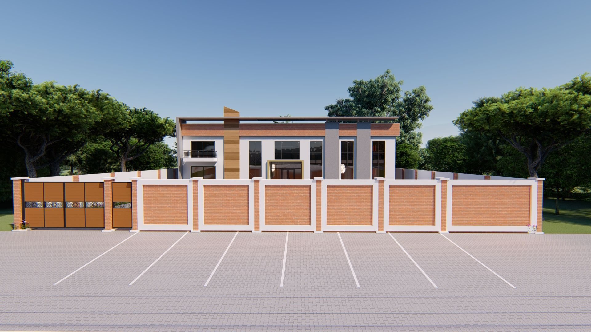

Célébration et Modularité Architecturale
Ce projet de salle de fêtes et d'événements est conçu comme un espace polyvalent capable d'accueillir diverses manifestations sociales et culturelles. L'architecture se concentre sur la création d'un grand volume libre, libéré de poteaux intermédiaires grâce à une charpente métallique de grande portée, offrant une flexibilité d'aménagement totale.
L'approche esthétique privilégie la solennité et la fête, avec une gestion soignée de l'acoustique, de la ventilation naturelle et de l'éclairage scénique. Ce projet démontre une capacité à gérer des programmes d'équipements publics complexes, alliant contraintes techniques de sécurité incendie et exigences de confort pour de larges audiences.





